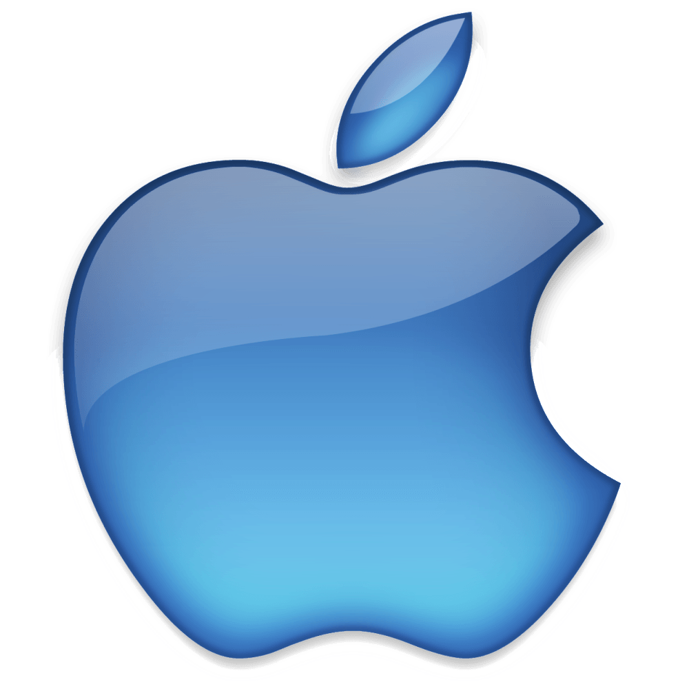

História dos logos
De acordo com Steve Jobs, o nome da empresa foi inspirado por sua visita a uma fazenda de maçãs, enquanto ele estava em uma dieta frutarianista. Jobs pensava que o nome "Apple" era "divertido, animado e não intimidante".
O primeiro logotipo da Apple, desenhado por Ron Wayne, retrata Sir Isaac Newton sentado sob uma macieira. Foi quase imediatamente substituído pelo "arco-íris Apple" de Rob Janoff, a agora conhecida silhueta cor de arco-íris de uma maçã com uma mordida. Janoff apresentou Jobs com vários temas monocromáticos diferentes para o logotipo "mordido" e Jobs imediatamente gostou dele. No entanto, Jobs insistiu que o logotipo deveria ser colorido para humanizar a empresa. O logotipo foi projetado com uma mordida para que não fosse confundido com uma cereja. As listras coloridas foram concebidas para tornar o logotipo mais acessível e para representar o fato de que o Apple II poderia gerar gráficos em cores. Este logo é muitas vezes erroneamente referido como uma homenagem a Alan Turing, com a marca de mordida uma referência ao seu método de suicídio. Tanto Janoff quanto a Apple negam qualquer homenagem a Turing no desenho do logotipo.
Em 27 de agosto de 1999 (o ano seguinte à introdução do iMac G3), a Apple deixou de usar oficialmente o esquema do arco-íris e começou a usar logotipos monocromáticos quase idênticos em forma à encarnação anterior do arco-íris.
Steve Jobs e Steve Wozniak eram fãs dos The Beatles, mas a Apple teve problemas de marca registrada e nome com a Apple Corps, uma empresa multimídia iniciada pelos Beatles em 1967. Isso resultou em uma série de ações judiciais e de tensão entre as duas empresas. Essas questões terminaram com a resolução de seu mais recente processo em 2007.
Primeiro protótipo da Apple
Primeiro logo oficial de 1978
Logo de 1998
Logo atual